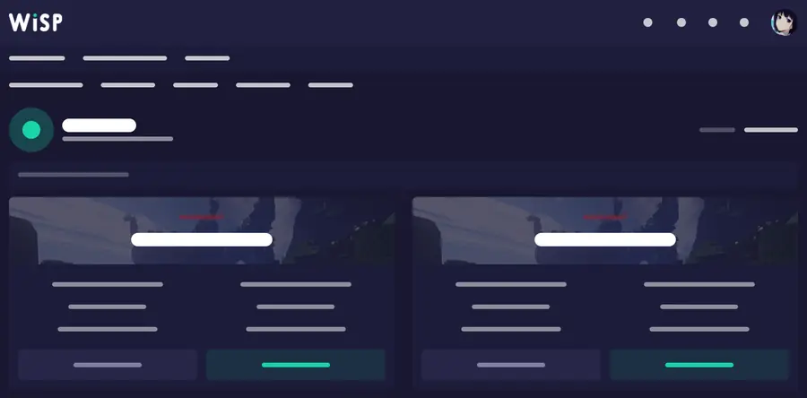
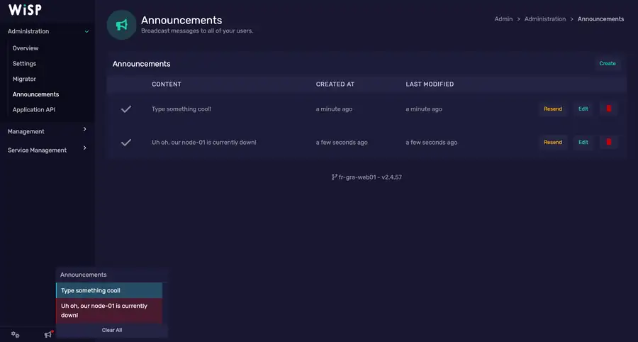

Let your AI manage your game server safely.
Connect a WISP game panel to ChatGPT, Claude Code, or another MCP client. Read logs, edit configs, deploy plugins, run console commands, restart servers and manage backups without giving the AI unrestricted host access.
First, check that your panel is WISP.
Hosts can change the logo, colors and domain, so use the screenshot as a visual clue — not as the only proof.
Looks familiar?
If your game-server dashboard looks similar, your host may use WISP. If you are unsure, ask support: “Does my server use WISP, and can I create a WISP Client API token?”
If yes, Wisp MCP is designed for that panel. No host-specific integration is required.



Four simple steps.
The server connection and the AI connection are separate. Configure WISP once, then choose whichever MCP client you want.
Install
Run one command on a small Linux VPS or install locally with Python.
Connect WISP
Enter your panel URL and Client API token in the hidden setup prompt.
Pick your AI
ChatGPT, Claude Code or another MCP client connects to the same Wisp MCP server.
Choose permissions
Start read-only, then enable files, console, power, backups or databases only when needed.
Copy one command.
Debian 12 and Ubuntu 24.04+ are the recommended beginner path. Secrets are entered interactively and are not placed in the command line.
Any MCP client
Install Wisp MCP only. Ideal for Claude Code, local MCP clients, SSH stdio, or your own secure HTTP setup.
curl -fsSL https://raw.githubusercontent.com/BreezeDelegate/wisp-mcp/main/install-vps.sh | sudo bashChatGPT
Install Wisp MCP plus the official OpenAI Secure MCP Tunnel helper for a private always-on VPS.
curl -fsSL https://raw.githubusercontent.com/BreezeDelegate/wisp-mcp/main/install-vps.sh | sudo bash -s -- --with-openaiUse the AI interface you prefer.
Wisp MCP supports the standard MCP stdio and Streamable HTTP deployment patterns. The AI product still needs MCP client support.
ChatGPT
Run Wisp MCP on your VPS, connect it through OpenAI Secure MCP Tunnel, then add the resulting MCP app in ChatGPT.
ChatGPT guide →Claude Code
Launch Wisp MCP directly, or use SSH as the stdio command when the MCP lives on a remote VPS. No public MCP port is required.
Claude Code guide →Other clients
Use stdio locally, Streamable HTTP behind authentication, or the release .mcpb bundle when your client supports MCP Bundles.
Compatibility guide →Useful access without permanent full control.
Permission gates live on the MCP server, so changing AI clients does not silently broaden what the model can do.
Typical management
- Read server status, resources and logs
- Browse and edit files and configs
- Deploy plugin files
- Send console commands
- Start, stop and restart
- Create backups and manage databases when enabled
Destructive stays separate
- Delete files or backups
- Restore a backup over live data
- Delete databases or rotate credentials
- Force-kill server processes
- Run panel update actions
- Enable only for a deliberate operation
Published in the official MCP Registry
io.github.BreezeDelegate/wisp-mcp · releases include wheel, source and MCP Bundle artifacts.